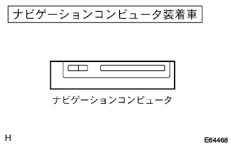
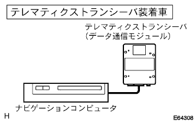
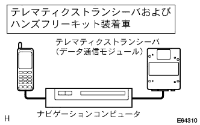
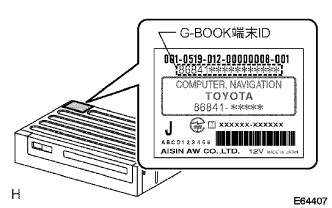
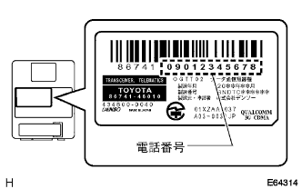

About G-Book online service
The G-Book online service uses communication when acquiring data.
- □ Participation □
- During data, the displayed content cannot be operated.
- For data communication, use telematic custlan saver (data communication modules) or mobile phones held by users.
Navigation computer -mounted car
- □ Participation □
- After replacing the navigation computer, it is necessary to contact the G-Book Support Center and set the vehicle linking of the G-Book terminal ID.
- In order to use the G-Book online service, you need to wear a hands-free kit or telematic custlan saver (data communication module).
Telemati Castle Seavor (data communication module) car installed car
- □ Participation □
- Use a telematic custlan saver (data communication module) for data communication.
- Voice calls cannot be made on Telemati Caser Seava (data communication module).
- After replacing the navigation computer or replacing the telematic custlan saver (data communication module), it is necessary to contact the G-Book Support Center and set the vehicle linking of the G-Book terminal ID and communication device ID.
Hands free kit -mounted car
- □ Participation □
- Use a mobile phone for data communication and voice calls.
- After replacing the navigation computer, it is necessary to contact the G-Book Support Center and set the vehicle linking of the G-Book terminal ID.
Telemati Castle Runber (data communication module) and hands -free kit -equipped car
- □ Participation □
- Use a telematic custlan saver (data communication module) for data communication.
- Use a mobile phone for voice calls.
- Voice calls cannot be made on Telemati Caser Seava (data communication module).
- Data communication on mobile phones is not possible.
- After replacing the navigation computer or replacing the telematic custlan saver (data communication module), it is necessary to contact the G-Book Support Center and set the vehicle linking of the G-Book terminal ID and communication device ID.
|  |
|  |
 |
|  |
|  |
About G-Book terminal serial ID
The navigation computer has a serial No. (G-Book terminal ID) that can identify the terminal and is used for individual recognition on service (listed in the terminal label barcode).Therefore, when replacing the G-Book device, contact the G-Book Support Center and re-register the serial No. (G-Book terminal ID).
|  |
About data communication modules
The data communication module (data communication dedicated radio) is used by G-Book terminal to provide network services.
The data communication module has a phone number, like mobile phones, etc. (listed in the label barcode of the main unit).When replacing the data communication module, you will need to contact the G-Book Support Center, re-registration of the phone number (communication module ID) and delete the old product.
- □ Participation □
- The supplied telemata custlan saver (data communication module) has a telephone number registered by the prescribed procedure.
- The support center is the registration of the old product.
About mobile phones for data communication
Use the mobile phone held by the user for data communication.
For data communication, a model that has been confirmed by the operation has been used for PDC (general digital method) or CDMA (CDMAONE, CDMA2000 1X).
If you use a mobile phone to use the G-Book online service, you need to connect to g-book.com and register your phone number.
About GPS antenna
It is equipped with a navigation dedicated GPS antenna in the instrument panel.